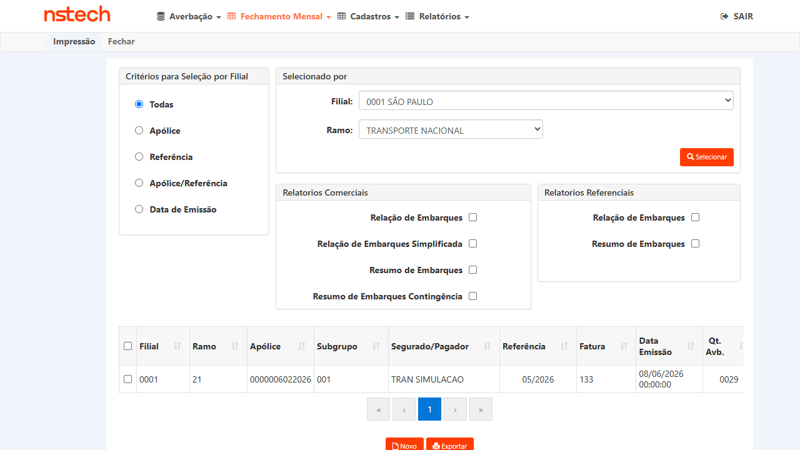
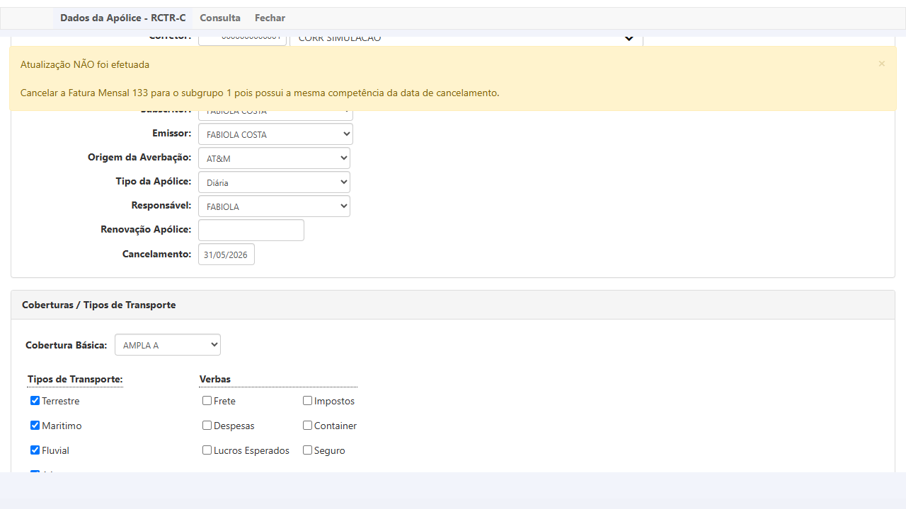
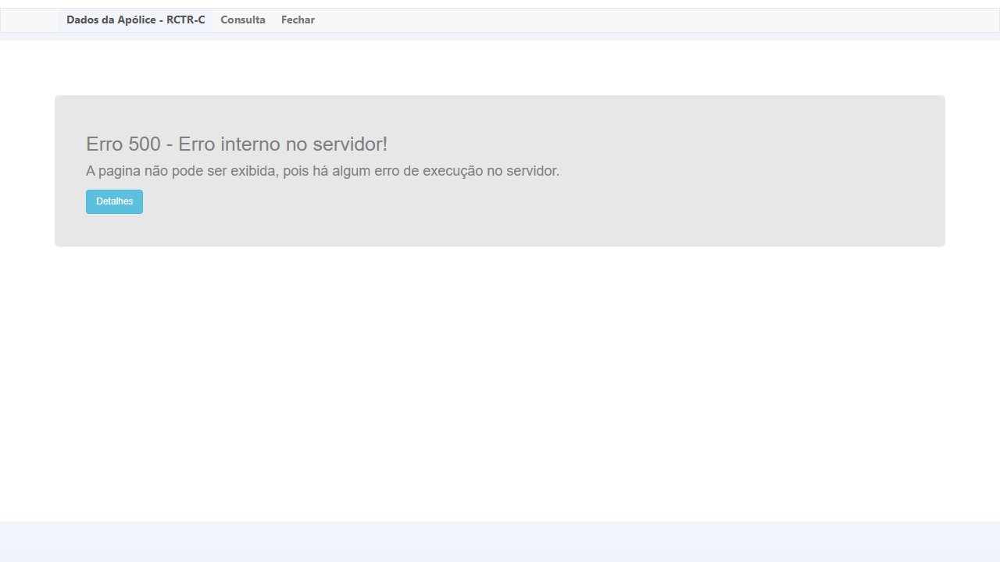

Descrição
Ao tentar salvar o cancelamento de uma apólice com data igual ao último dia do mês (ex: 31/05/2026), quando existe fatura fechada para a mesma competência (05/2026), o sistema retorna Erro 500 — Erro interno no servidor.
A exceção é:
O fix do PBI-6719 removeu o bloqueio de validação para esse cenário (último dia do mês), permitindo que o fluxo chegue até o save — porém, um overflow de tipo
A exceção é:
Value was either too large or too small for an Int16, gerada em CadApolice21.aspx.cs:2266 durante o evento btnSalvarDadosApolice_Click.O fix do PBI-6719 removeu o bloqueio de validação para esse cenário (último dia do mês), permitindo que o fluxo chegue até o save — porém, um overflow de tipo
Int16 no código de persistência impede a conclusão.
Ambiente
URL:
Build: V 1.0.260602.1734
Apólice:
Fatura: 133, competência 05/2026, emitida em 08/06/2026
Usuário: ROT_AUTO (GESTOR)
https://kovr-hml-faturamento.nsseg.com.br/dadosapolice/Default.aspxBuild: V 1.0.260602.1734
Apólice:
0000006022026 — Ramo 21, Filial 0001 SÃO PAULO, Tipo Diária, Vigência 01/01/2026–01/01/2027Fatura: 133, competência 05/2026, emitida em 08/06/2026
Usuário: ROT_AUTO (GESTOR)
Passos para Reproduzir
- Acessar CITWEB KOVR HML:
https://kovr-hml-faturamento.nsseg.com.br/login/com usuárioROT_AUTO / T7Jjm6xF - Ir para Dados da Apólice - RCTR-C (menu Averbação → ou aba de navegação)
- Pesquisar apólice
6022026, Filial0001 - SÃO PAULO - Confirmar que a apólice possui Fatura 133 para competência 05/2026 (visível em Fechamento Mensal → Impressão → Ramo 21, Mês 05/2026)
- No formulário DadosApolice, preencher campo Cancelamento com
31/05/2026(último dia de maio) - Clicar em Atualizar
- Resultado: Erro 500 — "Value was either too large or too small for an Int16"
Comportamento Esperado vs Obtido
✅ Esperado (comportamento do fix PBI-6719): O sistema deve aceitar e salvar o cancelamento em 31/05/2026, exibindo mensagem de sucesso "Atualização dos dados efetuada com sucesso". O fix permite cancelamento no último dia do mês mesmo com fatura fechada para a mesma competência.
❌ Obtido: O sistema retorna Erro 500 interno. O cancelamento não é salvo. A tela do iframe exibe "Erro 500 - Erro interno no servidor! A pagina não pode ser exibida, pois há algum erro de execução no servidor."
Stack Trace
Exceção: Value was either too large or too small for an Int16.
at DadosApolice.CadApolice21.btnSalvarDadosApolice_Click(Object sender, EventArgs e)
in D:\a\1\s\DadosApolice\CadApolice21.aspx.cs:line 2266
at System.Web.UI.WebControls.LinkButton.OnClick(EventArgs e)
at System.Web.UI.WebControls.LinkButton.RaisePostBackEvent(String eventArgument)
at System.Web.UI.Page.ProcessRequestMain(Boolean includeStagesBeforeAsyncPoint,
Boolean includeStagesAfterAsyncPoint)
Hipótese Técnica
⚠️ A exceção
Possíveis causas:
• Número de dias calculados entre datas sendo atribuído a variável
• Código de competência calculado (ex: ano × 100 + mês = 202605) excedendo Int16 ao ser atribuído a campo de tipo errado
• O fix removeu uma validação que antes impedia chegar a esse trecho de código com esse valor
Nota: Os cenários CT-003 (30/04/2026) e CT-002 (15/05/2026) retornaram bloqueio com mensagem amigável sem erro 500, pois caem em branches de validação que não chegam à linha 2266. Apenas o cenário do último dia do mês (liberado pelo fix) atinge essa linha.
Int16 overflow ocorre em CadApolice21.aspx.cs:2266 durante o save. Hipótese: algum cálculo numérico envolvendo o dia 31 (ou a competência 05/2026 após o fix) excede o range do tipo Int16 (–32.768 a 32.767).Possíveis causas:
• Número de dias calculados entre datas sendo atribuído a variável
short em vez de int• Código de competência calculado (ex: ano × 100 + mês = 202605) excedendo Int16 ao ser atribuído a campo de tipo errado
• O fix removeu uma validação que antes impedia chegar a esse trecho de código com esse valor
Nota: Os cenários CT-003 (30/04/2026) e CT-002 (15/05/2026) retornaram bloqueio com mensagem amigável sem erro 500, pois caem em branches de validação que não chegam à linha 2266. Apenas o cenário do último dia do mês (liberado pelo fix) atinge essa linha.
Contexto — Cenários Funcionando vs Falhando
CT-003 (30/04/2026 — mês anterior à fatura): ✅ Bloqueio amigável — não chega à linha 2266
CT-002 (15/05/2026 — mesmo mês, dia intermediário): ✅ Bloqueio amigável — não chega à linha 2266
CT-001 (31/05/2026 — último dia, mesmo mês da fatura): ❌ Erro 500 Int16 overflow — chega à linha 2266 após o fix remover o bloqueio
CT-002 (15/05/2026 — mesmo mês, dia intermediário): ✅ Bloqueio amigável — não chega à linha 2266
CT-001 (31/05/2026 — último dia, mesmo mês da fatura): ❌ Erro 500 Int16 overflow — chega à linha 2266 após o fix remover o bloqueio
Evidências

Fatura 133 existente para competência 05/2026 (confirmação de massa)

Campo Cancelamento preenchido com 31/05/2026 (último dia do mês)

Resultado: Erro 500 — "Erro interno no servidor" ao clicar Atualizar

Detalhes: Int16 overflow em CadApolice21.aspx.cs:2266